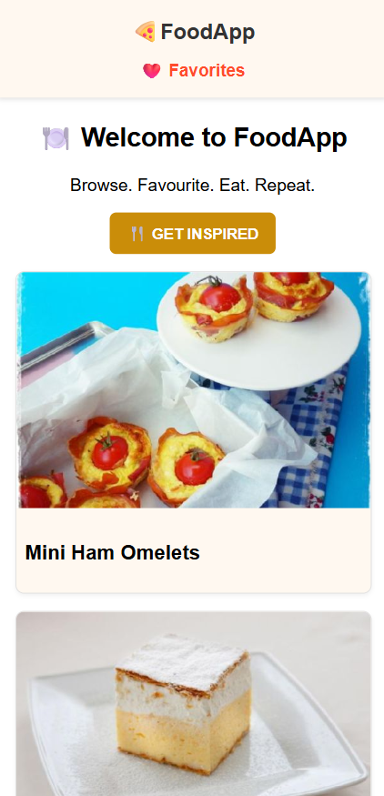

Here in Petya’s Digital Care — I design and develop Inteligent Web & App Solutions focusing on emotion, scalability and user experiance.
"I design and develop digital experiences that align business goals with user emotions."
Yorvik parking app
The Yorvik Parking App is a mobile-first prototype designed to help users register and book longboat parking spaces in the historic city of York. Built with stakeholder collaboration at its core, the app transforms a niche service into a seamless digital experience — from registration to QR-based ticketing.
⚙️ Video demo
Yorvik Parking App video demo
Context & Challenge
Developed through close stakeholder collaboration, it transforms a niche service into a seamless digital experience—from user registration to QR-based ticketing.
To guide the company I developed a detailed report, providing stakeholders with clear recommendations for the technicical solution they needed.
Process & Tools
Discovery: Stakeholder usecase
Design: Figma wireframes
Development: React Native + Express.js
Integration: Expo Go
Key Features
Maintain a list of parking berths with visual map
Real time data parking availability
Generating QR code berthing permit
Acount based previous permits views.
Outcome
Test users reported feeling more guided and relaxed — a reflection of emotionally intelligent UX.
As a result, stakeholders gained confidence in selecting the right technology and investing resources effectively to drive full-scale application development.

Food Web App
The Yorvik Parking App is a mobile-first prototype designed to help users register and book longboat parking spaces in the historic city of York. Built with stakeholder collaboration at its core, the app transforms a niche service into a seamless digital experience — from registration to QR-based ticketing.
The Food Web Application was built using React.js for its modular architecture and dynamic UI capabilities, paired with CSS Modules for scoped styling and maintainability. Real-time recipe data is sourced from the Spoonacular API, with dietary filters and nutrition info integrated seamlessly.
Busy working people needed a web application to plan daily meals whilist stay healthy. The application solves this demand with updating receipts plan that users can download.
Process & Tools
Discovery: Reserch the need for meal plan solution for busy individuals
Design: Figma wireframes
Development: React + Spoonacular API
Integration: Vite, GitHub
Key Features
Search functionality for ingredient based receipts filter by vegan, vegeterian or Krtogenic categories
Weekly meal plan generate filter by calories, diet plan.
Download shoping list
Outcome
The app is build as a fight fidelity prototype and it is still under development
Black Hole Event-landing page
The Yorvik Parking App is a mobile-first prototype designed to help users register and book longboat parking spaces in the historic city of York. Built with stakeholder collaboration at its core, the app transforms a niche service into a seamless digital experience — from registration to QR-based ticketing.
Immersive stargasing black hole event landing page build to atrach more event attendance with marketing purpose
The museums often lack of clear marketing visuals to attract more event attendance. The Black hole landing page build more leads to sale subscription for event in the museum.
Process & Tools
Discovery: Reserch the need for atractive visuals describing the events
Design: Figma wireframes
Development: HTML + CSS +Animations + JavaScript
Integration: GitHub
Key Features
Immediate grap of user attention with Black hole simulation hero section asking users to register for the event.
Event description and workshop gallery section for all ages
Save my seat section and registartion form that simulates user details falling into the black hole.
Outcome
The landing page targets sciance events in museums or other organisations and can be modifyed to serve a different theme.
Cosmic Care e-commerce shop
The Yorvik Parking App is a mobile-first prototype designed to help users register and book longboat parking spaces in the historic city of York. Built with stakeholder collaboration at its core, the app transforms a niche service into a seamless digital experience — from registration to QR-based ticketing.